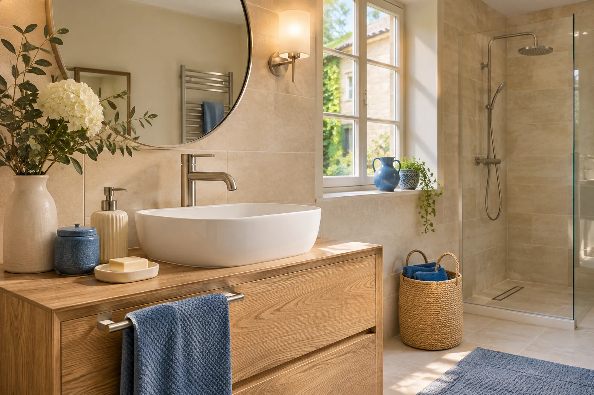
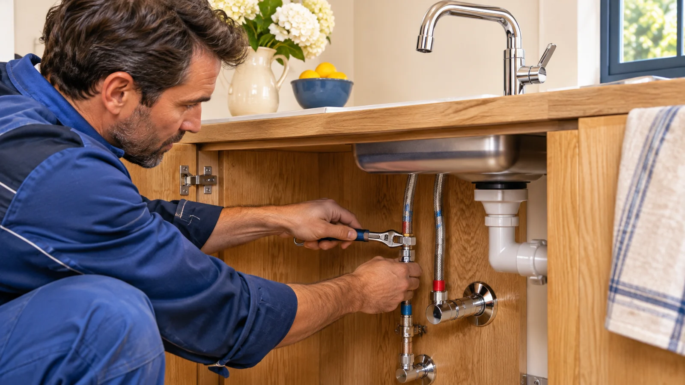

Installer et rénover vos équipements
Nous réalisons vos travaux de plomberie à Pineuilh : installation, réparation et dépannage des équipements sanitaires. Présentez-nous votre projet pour préparer les travaux nécessaires.
Installation, rénovation et dépannage : nous intervenons sur votre plomberie et vos équipements sanitaires.


Nous réalisons vos travaux de plomberie à Pineuilh : installation, réparation et dépannage des équipements sanitaires. Présentez-nous votre projet pour préparer les travaux nécessaires.
Nous intervenons sur la plomberie sanitaire, la robinetterie et les installations de salle de bains ou de cuisine, en neuf comme en rénovation.
Notre activité comprend les stations de pompage pour puits et forages ainsi que le traitement des eaux. Contactez-nous pour étudier votre installation et son utilisation.
Pour un dépannage de plomberie, indiquez votre commune, l’équipement concerné et les signes observés. Le mobile du technicien est réservé aux urgences pendant les heures d’ouverture.